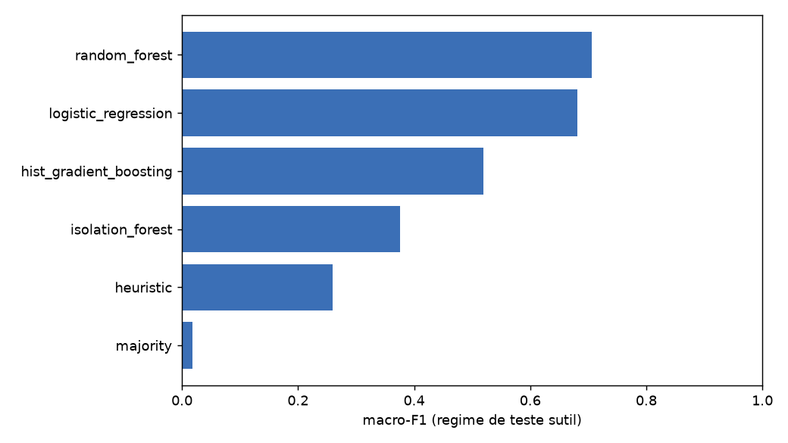
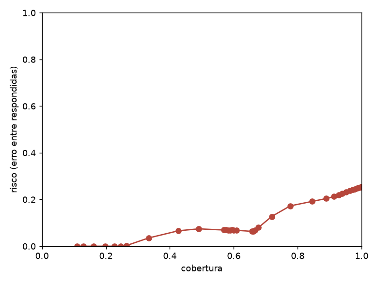

O NetSpot monitora hosts por ICMP, TCP, HTTP/DNS e SNMP e classifica uma amostra
de telemetria em dez cenários de operação e falha, com justificativa e plano de
mitigação. O protótipo original media a si mesmo: treino e teste saíam do mesmo
simulador, o motor generativo lia o rótulo e o índice de recuperação guardava o
nome do cenário. Esta avaliação reconstrói o pipeline para medir generalização
sobre dados não vistos. Os artefatos brutos ficam em
Backend/harness/results/.
Quatro perguntas guiam o trabalho.
O simulador gera telemetria para os dez cenários com faixas de severidade separadas entre treino, validação e teste. O treino usa anomalias claras e o teste usa anomalias sutis, o que mede generalização em vez de memorização. O CSV real entra por divisão temporal, UNSW-NB15 e CSE-CIC-IDS2018 entram como holdout externo e os cenários do laboratório Kathará servem de execução em rede emulada. Um teste automático falha se o rótulo aparecer na entrada, na consulta de recuperação ou no índice.
No mesmo conjunto de teste rodam heurística de NOC, Random Forest, gradient boosting, regressão logística, Isolation Forest, agente de linguagem sem e com exemplos, memória de casos, ajuste fino LoRA/QLoRA e combinação calibrada com abstenção. Nenhum resultado de modelo de linguagem é reportado sem o baseline clássico no mesmo split. As métricas são macro-F1, acurácia balanceada, precisão e recall por classe, matriz de confusão, PR-AUC, erro de calibração esperado, curvas de cobertura e risco, latência e taxa de JSON inválido. Toda métrica vem com intervalo de confiança bootstrap de 95%, e a comparação entre motores usa McNemar com correção de Holm-Bonferroni. A mitigação roda em ciclo fechado: o agente escolhe ações de um catálogo fechado, simula antes de aplicar, mede o efeito na vítima, reverte quando não há melhora e registra a trajetória com hash.
| Frente de trabalho | O que cobre |
|---|---|
| Infraestrutura de experimentos | Configurações versionadas, sementes fixas, métricas com intervalo de confiança e reprodução determinística em um comando. |
| Dados e divisões sem vazamento | Treino, validação e teste em faixas de severidade separadas, com teste automático contra vazamento. |
| Baselines com incerteza | Heurística, Random Forest, gradient boosting, regressão logística e Isolation Forest no mesmo conjunto de teste. |
| Agente de linguagem estruturado | Saída em JSON validada por schema, prompt versionado e abstenção; medição com modelo local e alvo maior em GPU. |
| Memória RAG sem vazamento | Busca por similaridade em perfis anonimizados; ablação com e sem a memória e teste de McNemar. |
| Ajuste fino LoRA e QLoRA | Pares de treino supervisionado, configuração com guarda e comparativo entre modelos; treino real pendente de GPU. |
| Decisão calibrada e mitigação | Calibração de temperatura, combinação ponderada dos motores, abstenção por cobertura e ciclo fechado com reversão. |
| Explicabilidade das justificativas | Importância de atributos, conferência das evidências contra a telemetria e rubrica de qualidade. |
| Reprodução e relatório | Execução determinística, manifesto com hashes e relatório com figuras. |
| Agente autônomo | Catálogo de ações, planejamento e ciclo de aplicar, medir e manter ou reverter. |
| Laboratório Kathará | Ataques e falhas injetados em containers reais, coleta na vítima e mitigação de ponta a ponta. |
| Antialucinação e verificação | Schema estrito com retentativa, verificação de evidências, veredito independente e catálogo fechado de ações. |
| Reprodução por anomalia | Dez anomalias com semente fixa, artefatos por anomalia e este relatório. |
| Conjuntos externos | Transferência para UNSW-NB15 e CSE-CIC-IDS2018, com mapa de rótulos e preenchimento documentado de valores ausentes. |
Motores clássicos e heurística no mesmo conjunto de teste, com intervalo de confiança bootstrap de 95%.
| Motor | macro-F1 | IC 95% | Acurácia |
|---|---|---|---|
| Random Forest | 0.706 | 0.694–0.718 | 0.730 |
| Regressão logística | 0.681 | 0.669–0.692 | 0.660 |
| Gradient boosting | 0.519 | 0.509–0.528 | 0.623 |
| Isolation Forest | 0.376 | 0.364–0.389 | 0.402 |
| Heurística | 0.260 | 0.254–0.266 | 0.366 |
| Classe majoritária | 0.018 | 0.017–0.020 | 0.100 |

Precisão da recuperação: 0.68. Amostras: 50.
| Condição | macro-F1 |
|---|---|
| sem a memória | 0.167 |
| com a memória | 0.087 |
Teste de McNemar pareado: p = 0.016.
Erro de calibração esperado antes e depois do ajuste de temperatura.
| Motor | ECE antes | ECE depois | Temperatura |
|---|---|---|---|
| Random Forest | 0.122 | 0.002 | 0.113 |
| Gradient boosting | 0.039 | 0.035 | 1.385 |
| Regressão logística | 0.088 | 0.088 | 1.064 |

Rubrica de 0 a 3 e fração de evidências que conferem com a telemetria, por cenário.
| Cenário | n | Rubrica (0 a 3) | Evidências conferidas |
|---|---|---|---|
| Falha combinada | 15 | 1.47 | 7% |
| Exfiltração de dados | 15 | 2.40 | 100% |
| Ataque DDoS | 15 | 2.00 | 0% |
| Disco esgotado | 15 | 2.27 | 100% |
| Host inacessível | 15 | 1.87 | 7% |
| Vazamento de memória | 15 | 2.67 | 100% |
| Congestionamento de rede | 15 | 2.00 | 0% |
| Operação normal | 15 | 2.53 | 100% |
| Varredura de portas | 15 | 2.13 | 27% |
| Falha de aplicação | 15 | 1.93 | 73% |
Cada anomalia é injetada no laboratório, mitigada pelo agente e medida antes e depois. A trajetória identifica a execução.
| Anomalia | Métrica | Antes | Depois | Veredito | Trajetória |
|---|---|---|---|---|---|
| Falha combinada | — | — | — | não verificada | b8ddad48cf32 |
| Exfiltração de dados | network_in_bps | 137,701,808 | 0 | mitigada | a55952e413a7 |
| Ataque DDoS | network_in_bps | 4,140,000 | 1,001,952 | mitigada | 5dec6883b79f |
| Disco esgotado | disk_usage_pct | 14 | 14 | revertida | 2f2e60c6481b |
| Host inacessível | — | — | — | não verificada | 82fba117941a |
| Vazamento de memória | http_response_time_ms | 2 | 1 | revertida | 7b45a4f6fbba |
| Congestionamento de rede | latency_ms | 0 | 0 | não verificada | 9c2d6e4f48eb |
| Operação normal | — | — | — | sem ação | 71d237830e86 |
| Varredura de portas | network_in_bps | 0 | 0 | revertida | 7e2ef152e1be |
| Falha de aplicação | http_response_time_ms | 0 | 0 | revertida | c2c1fe28fdfd |
O ciclo fechado é o resultado mais sólido. O agente escolhe uma ação, aplica, mede o efeito e reverte quando não há ganho, e isso foi comprovado em laboratório real. A detecção clássica ainda ganha do modelo de linguagem pequeno, que erra por falta de variedade nas respostas e é lento. O sistema está implementado e coberto por testes, mas falta a evidência com o modelo de 7 bilhões de parâmetros e com os adaptadores LoRA/QLoRA treinados, o que depende de uma máquina Linux com GPU. Até lá, os números do agente são os do modelo local pequeno.
Rodar o modelo de 7 bilhões no Linux com GPU e repetir as medições para saber se a memória de casos passa a ajudar. Treinar os adaptadores LoRA/QLoRA e comparar com a versão sem treino. Executar por inteiro os conjuntos externos UNSW-NB15 e CSE-CIC-IDS2018, cujo carregador já está pronto. Ampliar os cenários do laboratório, que hoje cobrem congestionamento, host inacessível e exfiltração mas não falhas de enlace. Também está em aberto trocar a ponte Ethernet por um controlador SDN com OpenFlow.